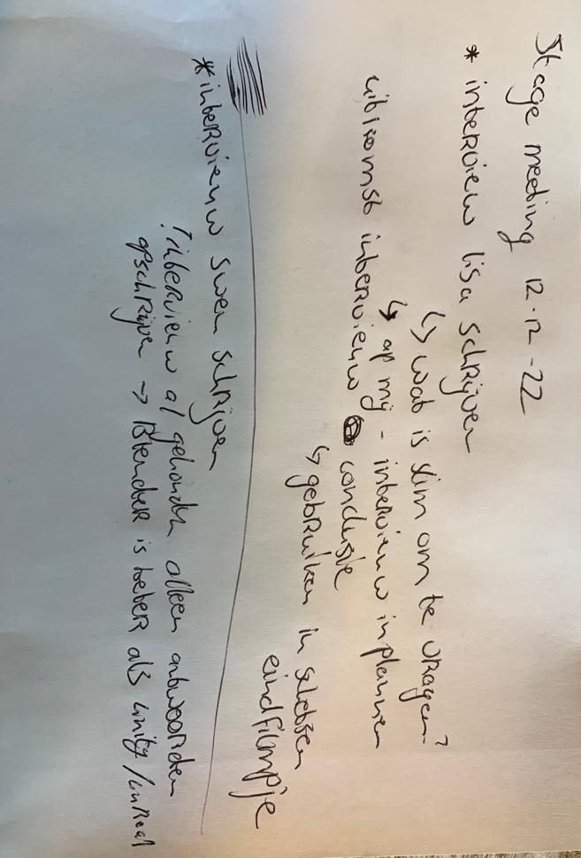
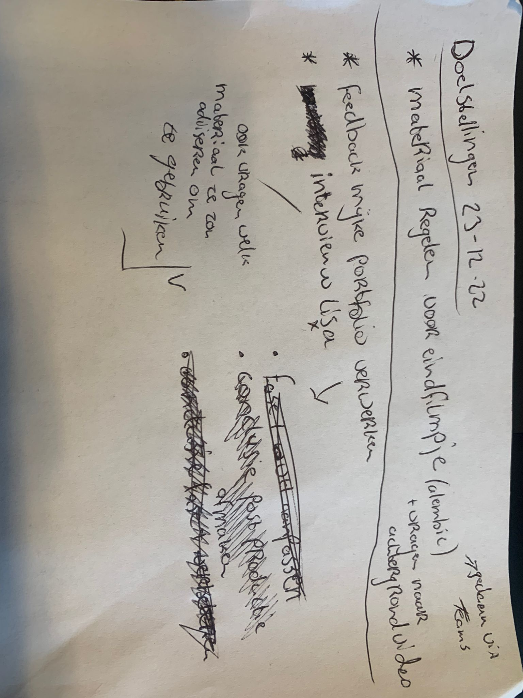

Planning voorbeelden
Ik ben helemaal aan het begin gelijk begonnen met het opstellen van een trello bord, vooral omdat dit vanuit alle voorgaande semesters werd aangeduid als noodzakelijk om een goede planning bij te houden. Echter merkte ik dat deze methode niet heel goed bij mij aansloot. Na het maken van het bord en de eerste aanvullingen er op maken, heb ik er niet meer naar omgekeken. Ik heb tijdens mijn stage een andere methode gebruikt om structuur aan te houden. Ik heb elke ochtend met pen en papier doelsellingen voor mezelf opgeschreven. en deze doorgekrast wanneer ik ze afhad en in sommige gevallen heb laten zien aan Laura (stagebegeleider). Ook maakte ik op maandag ochtend een weekplanning met iets globalere doelstellingen voor de hele week, waar mijn dagelijkse planningen op waren gebasseerd, als er bijvoorbeeld iets niet af was schoof dat door naar de volgende dag. Elke maandag ochtend had ik een voortganggesprek met Laura, hier maakte ik ook altijd aantekeningen van. Hier een aantal voorbeelden
Stage meeting aantekeningen
Weekplanning

Dagplanning
